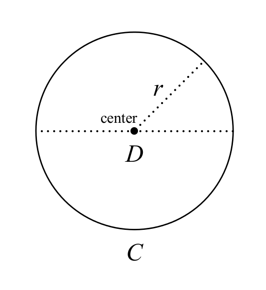
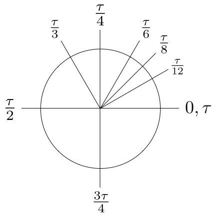
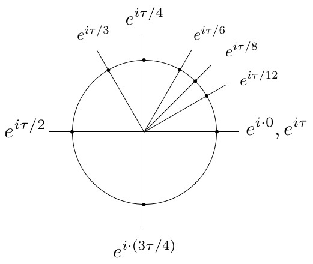

π は間違ってる？

昨日3月14日は「円周率の日」で「数学の日」でアインシュタイン博士の誕生日でした。 昔は物理学イベントもあった気がするけど …まぁいいや。
π は間違ってる？
Mastodon の TL を眺めてたら
という投稿を見かける。 ここでいう $\tau$ (tau) は1，半径 $r$，円周 $C$ の円

に対して
と定義されたものだ。 “The Tau Manifesto” では，この $\tau$ を “the true circle constant” (真円定数？) と呼んでいるようだ。 言うまでもなくこれは
である。 $\pi$ を $\tau$ に置き換えることにより，たとえば角度について

などと（$\pi$ に比べて）ちょっとシンプルな表現にできる。 また，さきほどの定義を使って円周の長さは
と記述でき，そこからの積分により円の面積 $S$ は
と導ける。 こっちのほうが，たとえば運動エネルギー $\tfrac{1}{2}mv^2$ や自由落下する物体の移動距離 $\tfrac{1}{2}gt^2$ などと同じ体裁で分かりやすいよね。
あるいは，有名なオイラーの公式
およびそこから導き出されるオイラーの等式は $\tau$ を使って

つまり
となり
A rotation by one turn is 1.
と，より直感的な主張になる。 クールだろ！
というわけで，次は「$\tau$ の日」である6月28日にお祝いしましょう（笑）
【おまけ】 天文計算で円周率の精度は何桁まで？
同じく Mastodon の TL で
という記事を教えてもらった。 これによると
For JPL’s highest accuracy calculations, which are for interplanetary navigation, we use 3.141592653589793.
なんだそうだ（2016年に書かれたものという但し書きがある）。 これっていわゆる double 型の浮動小数点数の有効桁数かな。 Go で書くとこんな感じになる。
package main
import (
"fmt"
"math"
)
func main() {
fmt.Printf("%g\n", math.Pi)
fmt.Printf("%b\n", math.Pi)
fmt.Printf("%x\n", math.Pi)
//Output:
//3.141592653589793
//7074237752028440p-51
//0x1.921fb54442d18p+01
}
うしろのふたつは浮動小数点数（IEEE 754）の内部表現で記述されている。 桁落ちなどの計算誤差に気をつける必要があるけど，基本型の浮動小数点数の演算で行けそうな感じではある。
なお math.Pi 定数は
const (
...
Pi = 3.14159265358979323846264338327950288419716939937510582097494459 // https://oeis.org/A000796
...
)
と定義されている2。 残念ながら $\tau$ は定義されてなかった。 まぁ $2\pi$ でいけるからな（笑）
ブックマーク
参考図書

- 数学ガールの秘密ノート／丸い三角関数
- 結城 浩 (著)
- SBクリエイティブ 2014-04-23 (Release 2015-04-18)
- Kindle版
- B00W6NCLJM (ASIN)
- 評価
丸と三角の楽しい関係。頑張れば小学生高学年でも大丈夫。

- 数学ガールの物理ノート／ニュートン力学
- 結城 浩 (著)
- SBクリエイティブ 2021-07-15 (Release 2021-07-16)
- Kindle版
- B093PZLQMQ (ASIN)
- 評価
「数学ガールの物理ノート」ですってよ。この巻は「力学」の話。で仕事とエネルギーについての議論へと発展する。面白い！

- 天体物理学
- Arnab Rai Choudhuri (著), 森 正樹 (翻訳)
- 森北出版 2019-05-28
- 単行本
- 4627275110 (ASIN), 9784627275119 (EAN), 4627275110 (ISBN)
- 評価
興味本位で買うにはちょっとビビる値段なので図書館で借りて読んでいたが，やっぱり手元に置いておきたいのでエイヤで買った。まえがきによると，この手のタイプの教科書はあまりないらしい。内容は非常に堅実で分かりやすい。理系の学部生レベルなら問題なく読めるかな。